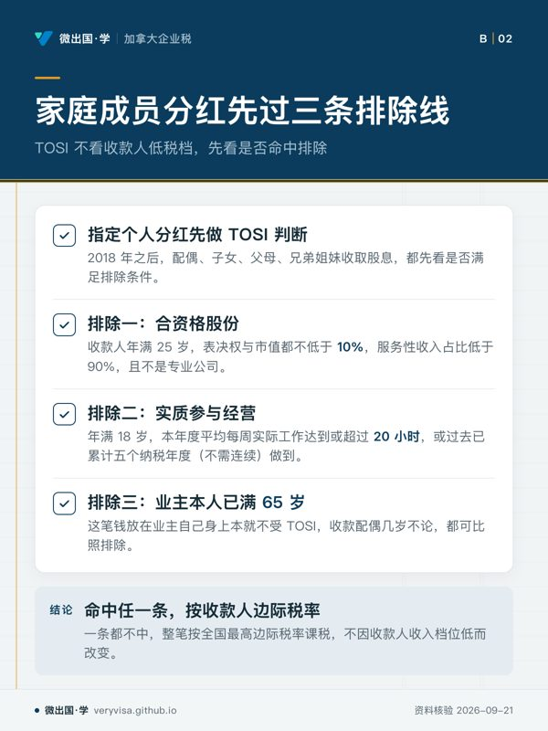
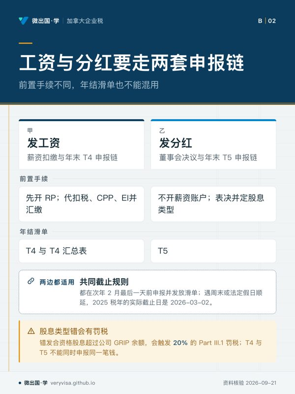
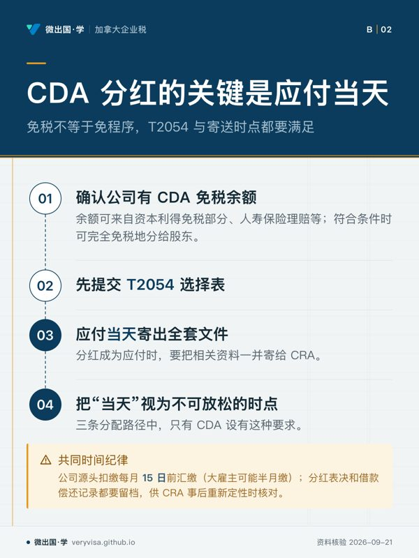

🃏 Flashcards · 3 闪卡 · 3 张 🖼 Slides · 4 幻灯 · 4 页 ✍️ Questions · 7 刷题 · 7 道
公司税 T2 Corporate tax (T2) P1 必拿分 P1 Must score
ZH EN ZH + EN
先看这一章怎么考 First, how this chapter is tested
定性对比题：给出业主经理的家庭结构与退休储蓄需求，考查工资与分红在公司税前扣除、注册退休储蓄计划（RRSP）额度、加拿大退休金计划（CPP）记录及托儿费扣除资格上的本质差异。 Qualitative comparison question: given an owner-manager's family structure and retirement saving needs, tests the essential differences between salary and dividends in corporate deductibility, registered retirement savings plan (RRSP) room, Canada Pension Plan (CPP) records and eligibility for the child care expense deduction. 整合与毛额化计算题：给出加拿大控管私人公司（CCPC）享小企业扣除后的税后利润，要求计算非合资格股息的15%毛额化应税股息金额、联邦9/13股息税收抵免以及卑诗省1.96%省级抵免基数。 Integration and gross-up calculation question: given the after-tax profit of a Canadian-controlled private corporation (CCPC) that claimed the small business deduction, compute the taxable amount of a non-eligible dividend with the 15% gross-up, the federal 9/13 dividend tax credit and the BC 1.96% provincial credit base. 家庭分拆收入（TOSI）判定题：设计配偶或成年子女从家族公司领分红的场景，考查合资格股份（年满25岁、双10%持股、非专业公司且服务收入低于90%）、实质参与经营（每周至少20小时）及业主年满65岁三条排除线。 Tax on split income (TOSI) question: a spouse or adult child receives dividends from the family corporation; tests the three exclusion lines: excluded shares (age 25 or over, double 10% holding, not a professional corporation, and service income under 90%), substantial involvement in the business (at least 20 hours a week), and an owner aged 65 or over. 最常丢分的陷阱（看到题干信号就警觉） Traps that cost the most marks (watch for the signal in the stem)
股息计入赚取收入陷阱 Treating dividends as earned income 题干出现业主经理只领分红不发工资，却计划新增RRSP额度、累积CPP养老金或申报托儿费扣除。 The owner-manager takes only dividends and no salary, yet plans to add RRSP room, build a CPP pension or claim a child care deduction. TOSI年龄与工时错配陷阱 Mismatching the age and hours tests for TOSI 题干出现18至24岁成年子女、律师或会计师等专业公司、咨询服务公司，或挂名不干活的配偶领取分红。 The question involves an adult child aged 18 to 24, a professional corporation such as a law or accounting firm, a consulting services corporation, or a spouse who does no work but takes dividends. 股东贷款免本金即免利息陷阱 Assuming no principal inclusion means no interest benefit on a shareholder loan 题干强调股东从公司零息或低息借款并在规定的一年内按期还清本金，询问当年是否完全没有应税福利。 The question stresses that a shareholder borrowed from the corporation at zero or low interest and repaid the principal on time within the permitted year, and asks whether there is no taxable benefit at all for the year. 本章考点页：导图、要点表、7 道带逐项解析的练习 →
核实日期：2026-09-05｜现行口径：2026 税年｜复核：2027-06-30（CPP/CPP2/EI/RRSP 四组数字每年 1 月同步跳一次，这是本页更新最快的一格）
法条依据指向《所得税法》(Income Tax Act, ITA) 现行合订本（Act current to 2026-06-21）；数值指向加拿大税务局 (Canada Revenue Agency, CRA) 与卑诗省现行页面。
ca-corporate-01-t2-intro-sbd 讲清了公司自己交多少税，这一页接着往下问：钱从公司口袋挪到你个人口袋，走工资 这条路划算，还是走分红 这条路划算。这不是一道有唯一正确答案的题——它填在 T1 的雇佣收入行（line 10100）或股息行（line 12000），走哪条路要看你的现金需求、退休规划、家庭结构。这一页帮你看清三件事：工资为什么会同时带来 RRSP 额度、CPP 记录和托儿费扣除资格，也同时背上公司与个人两份 CPP；一笔非合资格分红从公司利润到你手上实际留下多少；给家人的分红什么时候会撞上 2018 年之后的 TOSI（Tax on Split Income）规则。
论坛决策清单：公司化之后怎么操作：SBD、工资还是分红、CPP怎么交，一篇把账算清 。论坛文章按留存利润、工资与分红逐项对比、CPP 与 RRSP 额度、TOSI 风险的顺序给出每年定薪酬组合的起点；具体金额的税后比较仍按本页整合算法与会计师测算。
一、制度设计与底层逻辑：两条税，为什么设计成不对称 本节回答 This section answers 工资与分红的扣除位置、整合机制及三项赚取收入资格差异 Where salary and dividends are deducted, how integration works, and the differences in the three earned income qualifications 本章考题 1 Question 1 本章考题 4 Question 4
1.1 工资是公司的费用，分红是公司税后的钱
这是整条规则的起点，也是最容易被忽略的一句话：工资在公司层面可以扣，分红不可以 。公司发给你的工资、奖金，是一项经营支出，先减掉这笔钱才算出应税收入；公司要分红，得先把利润按 ca-corporate-01-t2-intro-sbd 讲过的税率交完税，剩下的税后利润才能拿去分。所以从公司账本上看，工资是"发生在算税之前"的钱，分红是"算完税之后"的钱。
这句话直接决定了两条路径完全不同的税务地图：走工资，税只在你个人这一层交一次；走分红，钱先在公司层面交一道税（9% 或 15%，看是否享小企业扣除），到你手上再交第二道个人税。表面上看像是重复课税，但立法者早就想到了这一层——这就是整合 (integration) 制度存在的理由。
1.2 整合：让"公司先交、个人后补"约等于"直接赚到手"
整合想达成的效果是：同一块利润，不管是你自己直接挣的，还是先进公司再分给你的，两条路径合计的税负应该差不多。做法是给股息设计一套毛额化 (gross-up) 加股息税收抵免 (dividend tax credit, DTC) 的机制：
个人收到应税股息时，先按比例放大 这笔股息——非合资格股息（用小企业扣除交过低税的那部分利润分出来的）放大 15%，合资格股息（交过一般税率的那部分利润分出来的）放大 38%（ITA s.82(1)(b)，加拿大联邦法规库 ）。放大的目的是把股息"还原"成公司交税前的那个数字，好让后面的抵免有基数可算。抵免这一步再把公司已经交过的那道税还回来：联邦抵免率是放大部分的 9/13 （非合资格）与 6/11 （合资格）（ITA s.121，加拿大联邦法规库 ）。省里还有一份抵免：BC 2026 税年的股息抵免是应税股息的 12% （合资格）与 1.96% （非合资格），与 2025 年相同；它和联邦抵免一样，乘的是放大之后的应税股息，不是实际收到的金额。
这套机制近似 而不是精确 做到整合——原因是抵免率全国统一，而各省税率各不相同。所以"公司交税再分红"和"直接发工资"这两条路径最终留给个人手上的钱，会因为省份、税年、收入档位而有几个百分点的差距，方向甚至会随税率调整而反转。任何"开公司一定省税"或"分红一定比工资划算"的说法都是错的 ——这是一道要按人、按省、按年现算的题，不是一条通则。
ℹ️
整合失灵的地方，恰好是判断题最爱考的地方
整合是设计意图，不是保证。一个高收入的业主经理，如果把利润全部留在公司按小企业税率交完再分红，个人层面还要再交一次非合资格股息税——两道税合计往往高于 直接把这笔钱当工资发放、由公司当费用扣掉的税负。反过来，如果这笔钱本来就要留在公司里滚存投资，晚一点分红反而争取到了递延的好处。判断走哪条路，先问这笔钱要不要立刻花掉。
1.3 工资额外买到的三样东西，分红一样都买不到
工资在个人所得税表上比分红税率更高，这是常识，但工资额外换来的三件事经常被漏算：
第一，RRSP 供款额度。 RRSP 额度按"上一年 18% 的 earned income（赚取收入）"累积，年度上限封顶（CRA ）。而 ITA s.146(1) 对 earned income 的定义只圈定了雇佣所得、自营生意所得，以及不动产租金与版权/专利权使用费这几类——股息不在清单里 （加拿大联邦法规库（论坛解读） ）。只靠分红维生、一分钱工资都不发的业主经理，名下这份 earned income 是零，RRSP 额度也就永远是零。
第二，CPP 供款记录。 工资才会产生加拿大退休金计划 (Canada Pension Plan, CPP) 的可保收入，分红不产生。不发工资的业主经理，等于自己给自己判定"这辈子没交过 CPP"，退休时的 CPP 养老金按贡献记录算，记录是空的，给付也是空的。
第三，托儿费扣除资格。 托儿费扣除额度按"三分之二的 earned income"封顶（CRA（论坛解读） ），而 ITA s.63(3) 给出的 earned income 定义同样只认雇佣与自营所得，没有股息 （加拿大联邦法规库 ）。家庭现金收入很高、但全部来自分红的业主经理，可能一分钱托儿费都扣不了。
这三条共享同一个法律机制——ITA 里"赚取收入"这个概念反复出现，反复把股息排除在外。发工资买的不是税率，是资格。
1.4 谁与谁在博弈：把利润挪给低税率的家人
第二个战场是income splitting（收入分拆） 。既然家庭成员边际税率各不相同，把利润挪给税率低的那个人分红，直觉上能省税。真实付出劳动、按公允市价领工资的家庭成员，这条路一直合法——但要通过两道闸门：s.67 合理性测试 （付给家庭成员的报酬必须与付给陌生人做同样工作相当，否则不合理的那一截公司不能扣，加拿大联邦法规库 ）；以及business purpose 测试 （必须证明这个人确实提供了服务，未成年人尤其难证明）。
分红这条路则被 2018 年之后大幅收紧的 TOSI（Tax on Split Income，分割收入税） 规则堵死了大半：不满足排除条件的分红，会被按全国最高边际税率 课税，不管收款人自己的收入档位有多低。TOSI 常见的三条排除（详见第二节 2.4）是这场博弈里读者最该记熟的部分。
1.5 走错路的法律后果：不是补税那么简单
分类错了，代价不止是"多交点税"。工资算成了分红（或者反过来），会牵出连锁反应：该扣未扣的源头扣缴 (payroll source deductions) ——公司要补缴，还要交怠于扣缴的处罚与利息；该报 T4 的报成了 T4A 或 T5，CRA 重新定性后个人这边可能被追缴不同税种的差额；给家庭成员的"工资"如果被判定为徒有其名，公司这笔扣除会被整个打回、按 s.67 或 business purpose 测试双双落败。公司这边补税，个人这边补税，两头都跑不掉 ——这也是为什么这道题从来不是"选个税率更低的选项"这么简单。
节末检索小测 · 先别往回翻，凭记忆作答 Quick recall check: answer from memory before scrolling back
Elena is the sole shareholder-manager of a British Columbia CCPC. For the 2026 taxation year, she draws $120,000 strictly as non-eligible dividends and takes no salary. She has no other income sources. How does this compensation choice affect her childcare expense deduction and RRSP room?
Elena 是一家卑诗省 CCPC 的唯一股东兼经理。2026 税年她全部以非合资格股息形式提取 $120,000，不领任何工资，且无其他收入来源。这一薪酬选择如何影响她的托儿费扣除额度和 RRSP 供款额度？
a Both her childcare deduction cap and next year's RRSP room are calculated using the $138,000 grossed-up dividend amount. ✗ 落入股息计入赚取收入陷阱。毛额化（dividend gross-up）后的 $138,000 仅用于计算个人应税股息和股息税收抵免（dividend tax credit, DTC），股息完全不属于《所得税法》（ITA）定义的赚取收入（earned income）。 Falls into the 'Treating dividends as earned income' trap. The $138,000 grossed-up amount is used only to compute the individual's taxable dividend and dividend tax credit (DTC); dividends are never earned income as defined in the Income Tax Act (ITA).
b Her newly generated RRSP room for next year and her childcare expense deduction cap for this year are both zero. ✓ 正确。根据 ITA s.146(1) 与 s.63(3)，RRSP 额度（按上年 18% 的赚取收入［earned income］计算）与托儿费扣除上限（按赚取收入的 2/3 封顶）均将股息排除在赚取收入之外，只领分红会导致两项额度同时归零。 Correct. Under ITA s.146(1) and s.63(3), both RRSP room (18% of the prior year's earned income) and the child care expense cap (2/3 of earned income) exclude dividends from earned income, so taking only dividends brings both to zero.
c She generates $21,600 of new RRSP room, but her childcare expense deduction cap is reduced to zero. ✗ 落入股息计入赚取收入陷阱。18% × $120,000 = $21,600 只在 $120,000 属于工资等赚取收入（earned income）时才成立，分红不产生任何 RRSP 额度。 Falls into the 'Treating dividends as earned income' trap. 18% x $120,000 = $21,600 holds only if the $120,000 is salary or other earned income; a dividend generates no RRSP room.
d She can deduct childcare expenses up to $80,000, but she earns no new RRSP contribution room for next year. ✗ 落入股息计入赚取收入陷阱。托儿费扣除的三分之二上限同样以赚取收入（earned income）为基数（ITA s.63(3)），分红不计入该基数，因此不能按 $120,000 的三分之二扣减。 Falls into the 'Treating dividends as earned income' trap. The two-thirds child care cap is also based on earned income (ITA s.63(3)), and dividends are not part of that base, so the deduction cannot be two-thirds of $120,000.
看答案与每个选项的解析 Show the answer and why each option is right or wrong 答案 Answer ：b
二、2026 税年现行规则与数字 本节回答 This section answers 股息毛额化抵免、CPP与EI、应税福利及TOSI规则 Dividend gross-up credits, CPP and EI, taxable benefits and the TOSI rules 本章考题 2 Question 2 本章考题 3 Question 3
2.1 三列表一：股息毛额化/抵免与小企业税率，2024–2026 全部长青
这张表最值钱的一行不是某个百分比，是"长青"两个字一再出现 ——工资 vs 分红这道题的税率参数，2024 到 2026 一次都没动。这意味着任何一年算出来的比较结论，放到另外两年基本仍然成立，唯一要重算的是下面这张表：随年份走的是缴费上限，不是费率。
用这张表把"BC 一家 CCPC 交完税、把税后利润按非合资格分红发给唯一股东"的合计税负摊开算一遍：公司层面 $100 利润，享小企业税率的情形下交 11%（联邦 9%＋BC 2%）留下 $89；这 $89 分红给个人，毛额化后按 115% 计为应税股息 $102.35（CRA（论坛解读） ），扣掉股息税收抵免后，个人层面还要再交一次税 ，具体多少取决于其边际税率档位。整合"近似"两个字，就体现在这最后一步——两道税合计后与直接把 $100 当工资发放、由个人一次性按边际税率课税相比，谁更省，答案随收入档位浮动。
2.2 三列表二：工资这条路要背的三组年度数字
发工资的成本不只是个人所得税，是这一整张表。 公司按雇员比例配缴 CPP（5.95%，公司与你各付一份，合计 11.9%；没有公司的个体经营者在 T1 上自己一人扛两份）；EI 则不同——控制公司超过 40% 有表决权股份的人，其雇佣按《雇佣保险法》s.5(2)(b) 直接属于不可保雇佣 ，不用缴 EI，也不能领 EI 常规福利，这是业主经理与普通雇员的关键差别（本表列一般员工口径供对照）。CPP2 是 2024 年才启用的第二层，专收 YMPE 到 YAMPE 之间那一段收入（2026 年 YAMPE 为 $85,000，约为 YMPE 的 114%），YAMPE 以上不再缴，同样计入工资的边际成本。
2.3 应税福利：工资之外，公司还能给股东什么
工资与分红不是仅有的两条路——公司名下的车、给股东的贷款、免费或低价提供的住所，都可能构成应税福利 (taxable benefit) ，且按"因股东身份给的"还是"因雇佣关系给的"分两套完全不同的申报规则。
公司车。 待命费 (standby charge) 的条文公式是买断车按月 2% × 车辆原始成本 、租赁车按 2/3 × 月租 ，按车辆可供使用的月数计；只有公务用途超过 50% 时，才可再乘以"私用公里数 ÷（1,667 公里 × 可用月数）"打折（ITA s.6(1)(e)/(2)，加拿大联邦法规库 ）；再加一笔按 CRA 每年公布的每公里费率计的运营费用福利，减去股东已偿还的部分。这两块加总就是最终应税福利。
股东贷款。 ITA s.15(2) 规定股东向公司借的钱原则上整笔并入借款当年个人所得，最常用的例外是在放款那个公司税年结束后一年内还清 （另有雇员购房、购车等以雇员身份取得的贷款例外），且不是"借了又还"的循环操作（加拿大联邦法规库 ）——这就是考试口径里"两年结算日"说法的条文依据：借款年公司年结日再加一年，横跨的正好是公司的两个年结日。就算躲过了 s.15(2) 整笔入账，只要实付利息低于 CRA 每季公布的规定利率 (prescribed rate) ，差额还会被 s.80.4 追加认定为一笔推定利息福利（加拿大联邦法规库（论坛解读） ）——2026 年第四季度规定利率是 3%（CRA（论坛解读） ），这个数每季度都会变，实务里只记机制不记具体数字。
住房与其他财产的私人使用。 公司资产（房产、度假屋）给股东私用，按 s.15(1) 认定福利：有现成租赁市场的按公允市场租金计，没有可比市场的按"经营成本加正常回报率、乘以孰高的成本或公允价值"这套替代公式计。
✕
股东福利算错了，两头都翻车
应税福利分不清是"因股东身份"还是"因雇佣关系"给的，报错了滑单类型——股东福利该走 T4A，误报进 T4 会让 CPP/EI 也跟着算错；反过来，因雇佣关系给的福利误报成股东福利，会让这笔收入白白错失 CPP 的可保记录。而且股东福利报进 T4A 之后不能再享股息税收抵免 ——它不是股息，是普通所得（应税福利入 T4A code 28 或 117，报在 T1 的第 13000 行）。
2.4 TOSI：给家庭成员分红，三条排除线记熟
2018 年之后，凡是分给"指定个人"（配偶、成年或未成年子女、父母、兄弟姐妹）的股息，只要不满足下面任意一条排除，就按全国最高边际税率整笔课税，不管收款人自己的收入档位多低：
排除一，合资格股份 (excluded shares)。 收款人当年开始前已满 24 岁（即当年 25 岁或以上） ，持股占该公司表决权与市值都不低于 10% ，公司经营收入来自提供服务的比例低于 90%，且不是专业公司（律师、会计师、医生等执业类）（ITA s.120.4(1)，CRA（论坛解读） ）。给 18–24 岁子女的分红用不上这一条。
排除二，实质参与经营 (excluded business)。 收款人年满 18 岁，本年度，或过去累计任意五个纳税年度（不需连续，凑满五个才算）在该业务中平均每周实际工作达到或超过 20 小时 （CRA（论坛解读） ）。
排除三，业主本人已满 65 岁。 看的是创造收入的那一方（通常是持股经营的业主）：业主当年满 65 岁，且这笔钱若由业主自己收本就不受 TOSI 限制，那么分给其配偶也不受限，配偶自己几岁不论；机制上与养老金分割相通（ITA s.120.4(1.1)(c)，CRA（论坛解读） ）。
三条命中任何一条，这笔分红就按收款人自己的边际税率课税；一条都不中，整笔按最高档课，等于把"分给低税率家人"这条省税路彻底堵死。判断给家庭成员分红划不划算，先把这三条过一遍，不是先算税率差。
节末检索小测 · 先别往回翻，凭记忆作答 Quick recall check: answer from memory before scrolling back
Dr. Lin operates a medical professional corporation in BC and owns 90% of its voting shares. His 26-year-old son, Kevin, holds 10% of the shares (both votes and value), studies full-time overseas, and has never worked for the clinic. If the corporation pays Kevin a $30,000 dividend in 2026, how is it taxed?
Lin 医生在卑诗省经营一家医疗专业公司并持有 90% 表决权股份。他 26 岁的儿子 Kevin 持有 10% 股份（表决权与市值均占 10%），在海外全职读书且从未在诊所工作。若公司 2026 年向 Kevin 派发 $30,000 分红，该如何课税？
a At Kevin's graduated marginal tax rates because he is at least 25 years old and holds 10% of the votes and value. ✗ 落入 TOSI 年龄与工时错配陷阱。合资格股份（excluded shares）排除除了要求年满 25 岁和双 10% 持股外，还要求公司服务性收入低于 90% 且不能是专业公司（professional corporation）；医疗专业公司直接被排除在外。 Falls into the 'Mismatching the age and hours tests for TOSI' trap. Besides age 25 or over and a double 10% holding, the excluded shares exclusion also requires that the corporation's services income is under 90% and that it is not a professional corporation; a medical professional corporation is excluded outright.
b At the corporation's general corporate tax rate of 27% because the dividend fails the reasonableness test under s.67. ✗ 混淆了工资与分红的反避税工具。合理性测试（reasonableness test, s.67）针对的是公司税前扣除的工资费用，而家庭成员分红受分割收入税（Tax on Split Income, TOSI）管辖，在个人层面课税。 Confuses the anti-avoidance tools for salary and dividends. The reasonableness test (s.67) concerns salary deducted by the corporation before tax, whereas dividends to family members are governed by tax on split income (TOSI) and taxed at the personal level.
c At the top personal marginal tax rate under the Tax on Split Income (TOSI) rules because no exclusion applies. ✓ 正确。医疗专业公司无法适用合资格股份（excluded shares）排除，Kevin 从未在诊所工作也不满足实质参与经营（excluded business，每周至少 20 小时）排除，因此整笔分红按分割收入税（TOSI）以全国最高个人边际税率课税。 Correct. A medical professional corporation cannot use the excluded shares exclusion, and Kevin has never worked at the clinic, so he also fails the excluded business exclusion (at least 20 hours a week); the whole dividend is therefore taxed under tax on split income (TOSI) at the top personal marginal rate.
d Tax-free up to Kevin's basic personal amount because TOSI only applies to minor children under age 18. ✗ 混淆了历史旧规与现行法。2018 年修法后，分割收入税（TOSI）已从未成年人扩展至所有年龄段的指定个人（specified individuals），成年子女同样受限。 Confuses the old rules with the current law. After the 2018 amendment, tax on split income (TOSI) was extended from minors to specified individuals of all ages, so adult children are also caught.
看答案与每个选项的解析 Show the answer and why each option is right or wrong 答案 Answer ：c
三、实务流程：该走哪张表，该报哪张单 本节回答 This section answers RP账户、T4与T5截止日、CDA当日报及GRIP罚税 The RP account, T4 and T5 deadlines, same-day CDA filing and the GRIP penalty tax
决定发工资 ：需要先向 CRA 申请开立薪资扣缴账户 (payroll program account, RP) ，每次发薪按 CRA 发布的扣缴表代扣个人所得税、CPP、EI，按月（或符合条件按季）汇缴；年结后次年 2 月最后一天 前完成 T4 与 T4 汇总表的申报与滑单发放，遇周末或法定假日顺延至下一个营业日——2025 税年的实际截止日因此是 2026-03-02（CRA ）。
决定分红 ：不需要开薪资账户，但需要董事会正式表决分红 (dividend resolution) ，明确分红类型（合资格 / 非合资格）——错发合资格股息超过公司 GRIP 余额，会触发 20% 的 Part III.1 罚税。年结后同样在次年 2 月最后一天 前完成 T5 滑单申报（CRA ）。T4 与 T5 是两张完全独立的表，一笔钱不能同时上两张单 ，误把股东福利报进 T5 当股息，会让这笔钱错失应有的税种分类。
决定用资本股息账户 (Capital Dividend Account, CDA) 分红 ：如果公司有免税的 CDA 余额（来自资本利得免税部分、人寿保险理赔等），可以完全免税地分给股东，但必须提交 T2054 选择表，期限是分红成为应付之日与首次实际支付之日两者中较早的那天或之前 （ITA s.83(2)），全套文件一并寄给 CRA——这是三条路径里唯一要在分红之前就把申报做完的一条。
四个共同的时间纪律 ：公司源头扣缴每月 15 日前汇缴（大雇主可能是半月缴）；T4/T5 滑单次年 2 月最后一天前发放并申报；欠税与个人所得税汇算按各自的截止日走；分红表决记录与借款偿还记录都要留痕存档——CRA 事后重新定性时，靠的就是这些纸面证据。
节末检索小测 · 先别往回翻，凭记忆作答 Quick recall check: answer from memory before scrolling back
A Canadian-controlled private corporation realizes a capital gain and credits the non-taxable portion to its Capital Dividend Account (CDA). The board passes a resolution to pay a tax-free capital dividend to its sole shareholder on June 15, 2026. By when must the T2054 election be filed with the CRA?
一家 CCPC 实现资本利得并将免税部分计入资本股息账户（CDA）。董事会表决于 2026 年 6 月 15 日向唯一股东派发免税资本股息。T2054 选择表最迟必须在什么时候向 CRA 提交？
a On or before June 15, 2026, the day the capital dividend becomes payable to the shareholder. ✓ 正确。资本股息选择（s.83(2)）的 T2054 须不晚于分红成为应付之时（若更早实际支付，则不晚于首次支付日）提交，本题即 2026 年 6 月 15 日或之前；这是三条分配路径里时点最严的一条。 Correct. Form T2054 for the capital dividend election (s.83(2)) must be filed no later than the time the dividend becomes payable (or, if paid earlier, the first payment date), which here is on or before June 15, 2026; of the three distribution routes, this one has the strictest timing.
b By the 15th day of the following month, July 15, 2026, along with the monthly remittance. ✗ 混淆了不同申报的截止日。次月 15 日是薪资源头扣缴（payroll source deductions）的每月汇缴截止日，不是资本股息账户（CDA）T2054 表的申报日。 Confuses the deadlines of different filings. The 15th of the following month is the monthly remittance deadline for payroll source deductions, not the filing date for Form T2054 for the capital dividend account (CDA).
c By the last day of February 2027, when the corporation files its annual T5 information return. ✗ 混淆了普通应税股息与资本股息的申报流程。次年 2 月最后一天是应税股息 T5 滑单的截止日，而 CDA 免税分红要求在应付当天提交 T2054 选择表。 Confuses the filing process for ordinary taxable dividends and capital dividends. The last day of February of the next year is the deadline for T5 slips for taxable dividends, whereas a tax-free CDA dividend requires Form T2054 to be filed by the day it becomes payable.
d Within six months after the end of the corporation's 2026 taxation year, together with the T2 return. ✗ 将 T2 公司税表申报期误套在 CDA 选择表上。T2054 不能等到年结后随 T2 一起交，必须在资本股息成为应付的当天提交。 Wrongly applies the T2 corporate return filing period to the CDA election form. T2054 cannot wait until after year-end to be filed with the T2; it must be filed by the day the capital dividend becomes payable.
看答案与每个选项的解析 Show the answer and why each option is right or wrong 答案 Answer ：a
四、联邦之外：卑诗省这条怎么走 本节回答 This section answers BC省公司税率与雇主健康税百万免征门槛 BC corporate tax rates and the $1,000,000 Employer Health Tax exemption threshold
BC 这条路上，两件事直接决定工资 vs 分红的取舍：
第一，BC 的公司税率完全长青。 小企业税率 2%（2017-04-01 起）、一般税率 12%（2018-01-01 起）、限额 $500,000，此后再没变过（BC 省政府 ），这意味着"留在公司里再分红"这条路径在 BC 这一侧的成本几年来是稳定的，年度更新时不用重算这一半。
第二，BC 的雇主健康税 (Employer Health Tax, EHT) 基本不构成实质成本。 这是一个常被误解的点：EHT 按全年 BC 境内薪资总额（工资、奖金、应税福利，不含股息 ）课征，$1,000,000 以下全免 ，$1,000,000.01 到 $1,500,000 之间按"5.85% × 超出 $1,000,000 的部分"分级，超过 $1,500,000 才按"1.95% × 全部薪资"整体课征（BC 省政府（论坛解读） ）。一到几名员工的小型业主经理公司，全年薪资总盘子通常远低于这个门槛——"发工资在 BC 会多交一层省级雇主税"这个说法，对典型的小生意并不成立 ，只有薪资盘子逼近百万时才需要把这条正式算进决策。
BC 省这边还有自己的省级股息税收抵免 （走 BC428 表的专门工作表计算，不是简单套用联邦的 9/13、6/11），以及自己的个人所得税阶梯——这两项共同决定了某个具体收入档位下工资与非合资格分红孰优孰劣，本篇不逐一列出全部省级百分比，读者需按当年 BC428 与联邦税表联算；机制层面记住"BC 的整合同样只是近似"就够用。
节末检索小测 · 先别往回翻，凭记忆作答 Quick recall check: answer from memory before scrolling back
An owner-managed engineering CCPC operates entirely in British Columbia. For 2026, it pays $320,000 in salary to the owner-manager, $180,000 in wages to two junior technicians, and $150,000 in non-eligible dividends. What is the corporation's BC Employer Health Tax (EHT) liability for 2026?
一家由业主经理经营的工程类 CCPC 完全在卑诗省运营。2026 年公司向业主经理发工资 $320,000，向两名初级技术员发工资共 $180,000，并派发非合资格股息 $150,000。该公司 2026 年的卑诗省雇主健康税（EHT）应缴税额是多少？
a $9,750, calculated as 1.95% of the $500,000 total employment remuneration paid in BC. ✗ 忽略了免征门槛。1.95% 的整体费率仅在全年 BC 境内薪资总额超过 $1,500,000 时才适用；该公司的薪资总额仅 $500,000，远低于起征点。 Ignores the exemption threshold. The overall 1.95% rate applies only when total BC remuneration for the year exceeds $1,500,000; this corporation's total remuneration is only $500,000, far below the starting point.
b $12,675, calculated as 1.95% of the combined $650,000 in salaries, wages, and dividends. ✗ 同时犯了两个错误：一是雇主健康税（Employer Health Tax, EHT）计税基数不含股息；二是全年薪资未超过 $1,000,000 免征线。 Makes two errors at once: the Employer Health Tax (EHT) base does not include dividends, and the year's remuneration does not exceed the $1,000,000 exemption line.
c $29,250, calculated at the 5.85% notch rate applied to the whole $500,000 of total BC payroll. ✗ 误用了分级过渡税率。5.85% 仅针对 $1,000,000.01 至 $1,500,000 之间超出 $1,000,000 的那一部分薪资课征，$1,000,000 以下全免。 Misuses the graduated transition rate. The 5.85% applies only to the part of remuneration above $1,000,000 between $1,000,000.01 and $1,500,000; remuneration up to $1,000,000 is fully exempt.
d $0, because BC payroll is $500,000 (dividends excluded), under the $1,000,000 exemption threshold. ✓ 正确。卑诗省雇主健康税（Employer Health Tax, EHT）按 BC 境内薪资总额（$320,000 + $180,000 = $500,000，不含股息）课征，全年薪资在 $1,000,000 以下全额免征。 Correct. BC Employer Health Tax (EHT) is charged on total BC remuneration ($320,000 + $180,000 = $500,000, excluding dividends), and remuneration of $1,000,000 or less for the year is fully exempt.
看答案与每个选项的解析 Show the answer and why each option is right or wrong 答案 Answer ：d
五、历史变革：这套取舍是怎么变成现在这样的 本节回答 This section answers 合资格股息引入、2018扩展TOSI与资本递减放宽 The introduction of eligible dividends, the 2018 TOSI expansion and the wider taxable capital phase-out
分红的规则曾经只有一种。 在 2006 年"合资格股息"制度引入之前，所有加拿大公司分出的股息不分来源，一律按同一套毛额化/抵免比例课税——那时把大公司的一般税率利润和小公司的低税率利润混在一起分红，个人层面交的税是一样的，整合明显失灵。引入合资格股息（对应 GRIP，来自没有享受过小企业税率的那部分利润）之后，两套税率才第一次分开对齐各自公司层面实际交过的税。
TOSI 曾经只管未成年人。 2018 年之前，分割收入规则（当时俗称"童子税"）只针对未满 18 岁的未成年人；2018 年联邦预算把它大幅扩展到所有年龄的"指定个人"，才有了今天配偶、成年子女、父母、兄弟姐妹都要过三条排除线的局面。这次修法直接终结了过去业主经理普遍采用的"把公司股份分给全家、按每个人的税率分红"这条低门槛省税路，是本页内容里变化最大的一处。
小企业限额的递减机制在 Budget 2022 之后变宽。 大 CCPC 的应税资本递减区间从旧口径 $10M–$15M 扩宽到 $10M–$50M（详见 ca-corporate-01-t2-intro-sbd），这条虽然主要影响的是"能不能拿到 SBD"，但对本页而言意味着：更多中大型的家族公司仍然保有部分小企业税率额度，工资/分红这道题在更大规模的公司里依然适用同一套逻辑，不是只有微型公司才用得上。
节末检索小测 · 先别往回翻，凭记忆作答 Quick recall check: answer from memory before scrolling back
Which major legislative change in 2018 fundamentally altered how owner-managers of Canadian private corporations use dividends to split income with adult family members?
2018 年哪项重大立法变革从根本上改变了加拿大私人公司业主经理用分红与成年家庭成员分拆收入的做法？
a The introduction of the eligible dividend regime and the General Rate Income Pool (GRIP) to separate corporate tax rates. ✗ 时间线错位。合资格股息（eligible dividend）与一般税率收入池（GRIP）是在 2006 年引入的，旨在区分一般税率利润与小企业低税率利润，并非 2018 年改革。 Misplaces the timeline. The eligible dividend and the general rate income pool (GRIP) were introduced in 2006 to distinguish general rate profit from small-business-rate profit; they were not part of the 2018 reform.
b The expansion of the Tax on Split Income (TOSI) from minors under age 18 to specified adult individuals unless an exclusion is met. ✓ 正确。2018 年以前分割收入规则（俗称童子税）只针对未满 18 岁的未成年人；2018 年将其扩展至所有年龄的指定个人（配偶、成年子女、父母、兄弟姐妹），必须满足排除线才能避开最高档税率。 Correct. Before 2018, the split income rules (the 'kiddie tax') applied only to minors under 18; in 2018 they were extended to specified individuals of every age (spouse, adult children, parents, siblings), who must meet an exclusion to avoid the top rate.
c The widening of the taxable capital phase-out range for the small business limit from $10M–$15M to $10M–$50M. ✗ 时间线与法条功能错位。将应税资本递减区间从 $10M–$15M 扩宽到 $10M–$50M 是 Budget 2022 的变革，影响的是大中型 CCPC 能否保留小企业扣除限额。 Misplaces the timeline and the function of the provision. Widening the taxable capital phase-out range from $10M-$15M to $10M-$50M was a Budget 2022 change that affects whether large and mid-sized CCPCs can keep the small business limit.
d The creation of the second additional CPP contribution tier (CPP2) on earnings between the YMPE and YAMPE. ✗ 时间线错位。第二层附加 CPP 供款（CPP2）是 2024 年才启用的新规，且针对的是工资而非家庭分红。 Misplaces the timeline. The second additional CPP contribution tier (CPP2) is a new rule that started only in 2024, and it applies to salary, not to family dividends.
看答案与每个选项的解析 Show the answer and why each option is right or wrong 答案 Answer ：b
六、案例 本节回答 This section answers 独资顾问定薪、夫妻店20小时排除及股东贷款利息福利实操 One-person consulting pay, the 20-hour exclusion for a couple-run business, and the shareholder loan interest benefit in practice
案例一 · 温哥华的独资咨询顾问：只发刚好够用的工资
Priya 经营一家温哥华的 IT 咨询 CCPC，唯一股东兼唯一员工，公司年利润 $150,000，全享小企业税率，家庭年支出约 $70,000。示例数字 ：只发 $70,000 工资，买到 CPP 记录与约 $12,600 的下一年 RRSP 额度（18% × $70,000）；另假定已排除PSB、没有其他扣除且股东工资不属EI应保就业；公司还要负担雇主CPP $3,956.75，余下利润 $76,043.25按11%计算公司税约$8,364.76，留存约$67,678.49。未来派息是否更省，要再用未来个人税率及资金需求比较，不能预先保证。比较时应同时纳入雇主CPP、个人税、RRSP额度和公司留存用途；全发工资是待比较方案，并非当然错报。
案例二 · 素里的餐饮店夫妻公司：给配偶开工资还是分红
Marco 与太太共同经营素里一家餐厅，公司由 Marco 100% 持股，太太每周在店超过 20 小时，负责采购与前台。示例数字 ：太太年度工资 $45,000，符合 s.67 合理性测试（同岗位市场价约 $42,000–$48,000）；因每周超 20 小时满足 TOSI 的"实质参与经营"排除，日后即便改发她一部分分红也不会被打回最高档。常见错报 ：若太太只是挂名股东、不真正到店工作，直接分给她分红——两条排除线（10% 合资格股份、20 小时参与）都不满足，会被整笔按 Marco 的最高边际税率倒算，一分钱都省不下来。
图：工资还是分红——两条路径对应不同的税务资格
案例三 · 列治文的地产投资公司：股东贷款买房，踩中 s.80.4
James 的持股公司账上有 $500,000 现金，他 2026 年 3 月零利息借出 $200,000 用于个人置业首付，公司年结日 12 月 31 日。示例数字 ：若在 2027 年 12 月 31 日（借款年公司年结后一年内）前还清，本金不并入 s.15(2) 所得；但零利息低于 CRA 每季规定利率，仍要按 s.80.4 算一笔推定利息福利并入所得——2026 年 Q4 规定利率 3%，福利约等于"$200,000 × 3% × 实际借款月数 ÷ 12"。常见错报 ：以为一年内还清就全免税——那只免掉 s.15(2) 的本金 ，s.80.4 的利息福利 是独立的另一条规则，互不替代。
节末检索小测 · 先别往回翻，凭记忆作答 Quick recall check: answer from memory before scrolling back
In February 2026, Chloe borrows $100,000 interest-free from her wholly owned investment corporation (December 31 year-end) to renovate her home. She repays the entire $100,000 principal on November 30, 2027. Which tax consequence applies for 2026?
2026 年 2 月，Chloe 从其全资持股的投资公司（年结日为 12 月 31 日）无息借出 $100,000 用于装修自住房，并于 2027 年 11 月 30 日全额还清本金。2026 年适用哪项税务后果？
a The $100,000 principal is excluded under s.15(2), but she must include a deemed interest benefit under s.80.4 based on the prescribed rate. ✓ 正确。她在放款年公司年结日（2026 年 12 月 31 日）后一年内（2027 年 12 月 31 日前）还清本金，免除了 s.15(2) 的本金并入；但零息借款低于规定利率（prescribed rate），仍须按 s.80.4 计算推定利息福利（deemed interest benefit）并入个人所得。 Correct. She repaid the principal within one year after the corporation's year-end in the year of the loan (December 31, 2026), that is, before December 31, 2027, which avoids inclusion of the principal under s.15(2); but a zero-interest loan is below the prescribed rate, so a deemed interest benefit under s.80.4 must still be computed and included in her personal income.
b Neither the principal nor any interest benefit is taxable because the loan was repaid within one year after the corporate year-end. ✗ 落入股东贷款免本金即免利息陷阱。一年内还清只免掉 s.15(2) 的本金并入，s.80.4 的推定利息福利是并行独立的另一条规则，不能因此免除。 Falls into the 'no principal inclusion means no interest benefit' trap. Repaying within one year only avoids the s.15(2) principal inclusion; the s.80.4 deemed interest benefit is a separate parallel rule and is not removed by it.
c The full $100,000 loan principal must be included in her 2026 income because it remained unpaid on December 31, 2026. ✗ 误解了还款期限。ITA s.15(2) 允许在放款那个公司税年结束后一年内（即 2027 年 12 月 31 日前）还清，跨越两个公司年结日，不要求在借款当年年底前还清。 Misunderstands the repayment deadline. ITA s.15(2) allows repayment within one year after the end of the corporation's tax year in which the loan was made (before December 31, 2027), spanning two corporate year-ends; repayment by the end of the loan year is not required.
d The deemed interest benefit is reported on a T5 slip and qualifies for the non-eligible dividend tax credit. ✗ 落入滑单混报陷阱。股东福利（taxable benefit）应报在 T4A 上并计入 T1 第 13000 行普通所得，不是股息，不能上 T5 也不享受股息税收抵免（DTC）。 Falls into the slip-mixing trap. A shareholder benefit (taxable benefit) goes on a T4A and is included in ordinary income on line 13000 of the T1; it is not a dividend, cannot go on a T5 and does not earn the dividend tax credit (DTC).
看答案与每个选项的解析 Show the answer and why each option is right or wrong 答案 Answer ：a
七、常见错报与自查清单 本节回答 This section answers 全发工资或全发分红失衡、无日志算车费及滑单混报等七大错报 Seven common errors, including all salary or all dividends out of balance, car costs without a log, and mixed-up slips
把整年利润当年一次性发成工资 ——看似把公司应税收入压到最低，但个人边际税率因此被推高，往往比"工资＋留存分红"的组合多交税，还牺牲了递延的好处。只靠分红维生，从不发工资 ——RRSP 额度、CPP 供款记录、托儿费扣除资格三样一起归零，因为 ITA 对"赚取收入"的定义里都没有股息。给挂名但不实际工作的家庭成员发分红 ——一条排除线都不满足，整笔被 TOSI 按最高档课税，是本页最常见、代价最大的一种错报。误发合资格股息超过 GRIP 余额 ——触发 20% 的 Part III.1 罚税，事后才发现公司根本没有那么多"合资格"额度可用。股东贷款以为"一年内还清就全免税" ——漏算 s.80.4 的推定利息福利，这条与 s.15(2) 的本金并入规则是并行的两条,不是二选一。把股东福利报进 T5 当股息处理 ——股东福利没有股息税收抵免，混进 T5 会让个人报税时多算了一笔本不存在的抵免。公司车私用公里数不记行车日志、凭感觉估 ——待命费只有在公务用途超过 50% 且有私用公里记录时才能打折，没有日志就只能按全额算。
节末检索小测 · 先别往回翻，凭记忆作答 Quick recall check: answer from memory before scrolling back
A BC CCPC whose entire historical income was taxed at the 11% small business rate has a General Rate Income Pool (GRIP) balance of $0. If the corporation designates and pays a $50,000 eligible dividend to its shareholder, what penalty applies?
一家卑诗省 CCPC 历年全部收入均按 11% 小企业税率纳税，其一般税率收入池（GRIP）余额为 $0。如果该公司指定并向股东派发 $50,000 的合资格股息，会触发什么处罚？
a The shareholder is taxed on the dividend at the top marginal rate under the Tax on Split Income (TOSI) regime. ✗ 混淆了超额合资格股息罚税与分割收入税（TOSI）。TOSI 针对的是不符合排除条件的家庭成员分拆收入，而非超 GRIP 余额派发合资格股息。 Confuses the tax on excessive eligible dividends with tax on split income (TOSI). TOSI applies to a family member's split income that does not meet an exclusion, not to eligible dividends paid above the GRIP balance.
b The corporation is assessed a 20% Part III.1 penalty tax on the excess eligible dividend designation. ✓ 正确。合资格股息（eligible dividend）只能从一般税率收入池（General Rate Income Pool, GRIP）余额中派发；超出 GRIP 余额错发合资格股息，公司会触发 20% 的 Part III.1 罚税。 Correct. An eligible dividend can be paid only out of the general rate income pool (GRIP) balance; paying an eligible dividend above the GRIP balance triggers 20% Part III.1 penalty tax for the corporation.
c The corporation must pay BC Employer Health Tax at 5.85% on the $50,000 dividend distribution. ✗ 混淆了省级税种。卑诗省雇主健康税（EHT）只针对薪资总额课征，股息从不计入 EHT 基数。 Confuses provincial taxes. BC Employer Health Tax (EHT) is charged only on total remuneration, and dividends are never part of the EHT base.
d The CRA automatically recharacterizes the $50,000 distribution as employment salary subject to CPP and EI. ✗ 混淆了处罚机制。超额指定合资格股息受 Part III.1 的 20% 专门罚税规制，并不会被自动改判为雇佣工资。 Confuses penalty mechanisms. An excessive eligible dividend designation is governed by the specific 20% Part III.1 tax and is not automatically recharacterized as employment salary.
看答案与每个选项的解析 Show the answer and why each option is right or wrong 答案 Answer ：b
术语双语对照
来源
法条（现行合订本，Act current to 2026-06-21）：s.82(1)(b) 股息毛额化（加拿大联邦法规库 ）· s.121 联邦股息税收抵免（加拿大联邦法规库 ）· s.146(1) RRSP「赚取收入」定义（加拿大联邦法规库（论坛解读） ）· s.63(3) 托儿费「赚取收入」定义（加拿大联邦法规库 ）· s.6(1)(e)/(2) 汽车待命费公式（加拿大联邦法规库 ）· s.15(1)/(2)/(2.6) 股东福利与股东贷款（加拿大联邦法规库 ）· s.80.4(1)/(2) 推定利息福利（加拿大联邦法规库（论坛解读） ）· s.67 合理性测试（加拿大联邦法规库 ）。
CRA 现行页面：公司税率与省表（CRA ）· 公司税变化年表（CRA ）· 规定利率 2026 Q4（CRA（论坛解读） ）· CPP 供款率与上限（CRA（论坛解读） ）· CPP2 供款率与上限（CRA ）· EI 保费率与上限（CRA（论坛解读） ）· RRSP/TFSA 等限额年表（CRA ）· RRSP 供款额度算法（CRA ）· 托儿费扣除折页 S1-F3-C1（CRA（论坛解读） ）· T4 滑单申报指南 RC4120（CRA ）· Line 12000/12010 应税股息毛额化倍数（CRA（论坛解读） ）· Line 40425 联邦股息税收抵免取数路径（CRA（论坛解读） ）· TOSI 成年人分割收入排除指引（CRA（论坛解读） ）。
省级：BC 公司税率与经营限额（BC 省政府 ）· BC 雇主健康税起征点与税率（BC 省政府（论坛解读） ）。
交叉参考：ca-corporate-01-t2-intro-sbd（公司自身税率与 CCPC 资格）· ca-corporate-02-passive-income-grind（留存利润的被动收入递减）· ca-business-05-incorporate-or-not（要不要转公司这一步的前置判断）。
本页知识卡 不看正文也能拿到这一节的核心内容：先看导读，再看图。点图放大，左右翻页。
放大 ⤢ 发工资买的不是税率，是资格。 先看 先看三个结果分别对应储蓄空间、退休记录和托儿扣除。易漏 现金进到个人手里，不代表会生成这些税务或社保资格。下一步 去练习，把自己的取款方式代入三项资格逐项核对。详情与分享 → 
放大 ⤢ 先过三条排除，再算税率差。 先看 按股份、参与经营、业主年龄三个入口顺序检查。易漏 不是只有未成年人需要判断，成年家属也在范围内。下一步 去练习，逐项记录家属年龄、持股、工时和业主年龄。详情与分享 → 
放大 ⤢ 工资与分红必须分别申报，不能混单。 先看 先看两栏分别要建立什么程序，再看年结报哪种滑单。易漏 两条路线虽然同日到期，但只有股息还要核对公司可发类型。下一步 去练习，把一次实际付款归到正确申报路线。详情与分享 → 
放大 ⤢ CDA 分红要在应付当天完成文件寄送。 先看 先按资格、选择、递交三个动作顺序看，不要只看免税结果。易漏 这条路线对文件递交时点更苛刻，记录不足也会影响事后定性。下一步 去知识卡，用公司档案核对余额来源与留存记录。详情与分享 → 本站依据官方原文自撰 · 出处见正文链接